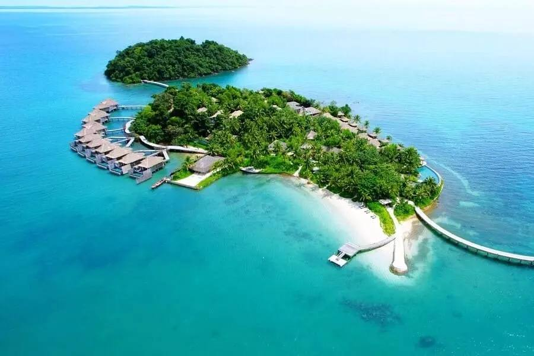

កោះរ៉ុង (ខេត្តព្រះសីហនុ)

កោះរ៉ុងជាកោះដ៏មានប្រជាប្រិយភាពបំផុតមួយនៅក្នុងប្រទេសកម្ពុជា ដែលមានឆ្នេរខ្សាច់សស្អាត និងទឹកសមុទ្រពណ៌ខៀវស្រងាត់ ស័ក្តិសមបំផុតសម្រាប់ការសម្រាកលំហែកាយ។
សកម្មភាពរីករាយ៖
- ហែលទឹក និងមុជទឹកមើលផ្កាប្រឡាំង (Snorkeling)
- ជិះទូកកាយ៉ាក់
- មើលពន្លឺផ្លេកៗនៃប្លង់តុងនៅពេលយប់